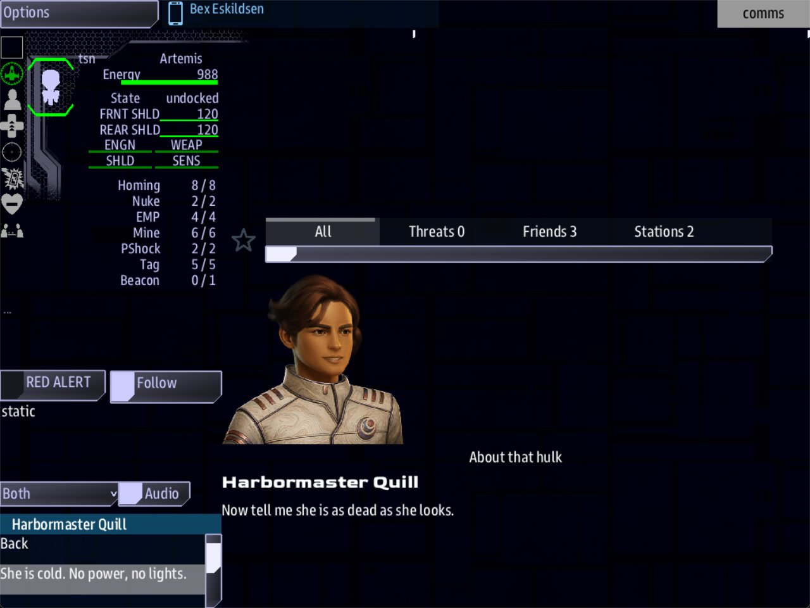

Class 2, Lecture 4 - Dialogue, part 2¶
What you will have at the end¶
Harbormaster Quill asks a question, and now the crew can answer it. One answer asks her for more. One takes a quest. One hangs up. If the crew takes the quest and finishes it, she calls back.

Comms with Quill's call open. The list at the lower left shows two rows at a time; scroll it for the other answers.You will edit one file, mission.amd: answers on one scene, three new scenes, and two
records among your quests. Nothing in story.mast changes.
The video¶
About 7 minutes. Subtitles are available in the player.
Before you start¶
- Your mission as Lecture 3 left it. When the ship comes inside 500 of the hulk, Quill calls and says two things.
sbs lint MyMissionsaysclean.- VS Code with the mission folder open, a command prompt open in
data\missions, and the game closed.
The game is started as in Lecture 3:
Words for this lecture:
| Word | Meaning |
|---|---|
| Answer | One thing the crew can say back. A line that starts with a dash. The library documentation calls it a choice |
| Outcome | What an answer does to the story. It is written after a semicolon |
Step 1 - Give the crew something to say¶
Open mission.amd and find Quill Checks In, at the end of the file. Below her last
take, leave a blank line and type two lines:
Each line is an answer: one thing the crew can say back.
| Part | What it means |
|---|---|
- |
A dash and a space. This is what makes the line an answer |
[She is cold. No power, no lights.] |
Square brackets. The words Comms reads in the list and picks |
() |
Round brackets, straight after the square ones, with no space between. They say where the conversation goes next. Empty means: the call is over |
It is the shape of a heading's [Name](key), with a dash in front where the hashes go.
Until now the call ended with Close. Now it ends with whichever answer Comms picks.
Two rules for an answer.
- An answer is one line. The dash, both pairs of brackets and anything after them stay on the same line.
- Answers come at the end. However many blocks she speaks, the answers are offered with the last one. Write them below her last take, so the page reads the way the call plays.
Save. Run lint: clean.
Step 2 - An answer that leads somewhere¶
An answer does not have to end the call. Put a scene's key in the round brackets and the conversation goes on there.
Change your first answer so its round brackets hold a key:
Save, and run lint. It tells you the half you have not done yet:
== mission.amd ==
[WARNING] line 303:39: choice in `quill_hello` points at `quill_offer`, which resolves to no node (dangling-choice)
1 amd + 1 mast file(s): 0 error(s), 1 warning(s)
In plain words: an answer in the scene quill_hello leads to quill_offer, and no record
has that key. "Choice" is lint's word for an answer, and "node" is its word for a record.
Now write that scene. Go to the end of the file and type:
### [The Offer](quill_offer)
---
Speaker: quill
---
% Then she is salvage, and somebody has to hang a beacon on her before the Breakers do. Do you want the job?
% Dead, then. That makes her salvage, and salvage wants a beacon. Are you offering?
- [We will tag her.]()
- [Find someone else, DS 1.]()
This scene has no When: line and no Title: line. Nothing in the story places it as a
call. The only way in is the answer that names it, and it is part of the same call.
The heading has three hashes, the same as Quill Checks In. A scene never sits inside another scene.
Save. Run lint: clean.
Step 3 - A second way in¶
Add one more answer to Quill Checks In, between the two you have:
- [She is cold. No power, no lights.](quill_offer)
- [What do you know about her?](quill_history)
- [Not now, DS 1. Artemis out.]()
And write its scene, above The Offer:
### [What DS 1 Knows](quill_history)
---
Speaker: quill
---
% She came through the gate eleven days ago with her transponder off. Nobody has claimed her.
% No flight plan, no transponder, no crew list. She arrived, and she stopped.
- [She is cold, DS 1. No power, no lights.](quill_offer)
- [Thank you, DS 1. Artemis out.]()
Two different answers now lead to The Offer. That is fine. A crew that asks first hears a little more and ends up in the same place.
A scene shows four answers at most. Write a fifth and it is never offered.
Save. Run lint: clean.
Step 4 - An answer that does something¶
So far an answer moves the conversation or ends it. It can also change the story.
First, the quest Quill is offering. Scroll up to the Quests section and find the beat DS 1 Calls. Below its description, leave a blank line and type:
### [Tag the Hulk](tag_hulk)
---
Scope: shared
Starts when: revealed
Objective: Give the salvage beacon 30 seconds to set
Done when: 30 seconds
Reward: 150 credits
---
 Harbormaster Quill, DS 1 traffic control
DS 1 wants a salvage beacon on the hulk before the Breakers find her.
A beacon makes her a claim on DS 1's salvage ledger. Until one is set, she belongs to whoever gets a line on her first, and the Breaker Cutter is already standing off.
Three hashes: it is a quest of its own, not a step of Salvage Run. Starts when: revealed
keeps it hidden until something starts it.
The description is the quest as Quill gives it, so it opens with her face, the way Close
Inspection does since Lecture 2: copy her Face: string, do not type it. Then two
paragraphs with a blank line between them: what she wants, and why it cannot wait. That is
what the crew reads in the Quest Log once they say yes.
Save, and run lint:
== mission.amd ==
[WARNING] line 156: `Tag the Hulk` waits to be revealed, and nothing reveals it: no `Then: reveal tag_hulk` on another step, and no answer or story line names `tag_hulk`. It never appears (never-revealed)
1 amd + 1 mast file(s): 0 error(s), 1 warning(s)
You met never-revealed in Lecture 9. Read the middle of this one: "and no answer ...
names tag_hulk". Lint already knows an answer can start a quest.
Go back down to The Offer and add to its first answer:
| Part | What it means |
|---|---|
; |
A semicolon. Everything after it is what the answer does |
accepts |
Start a quest that is waiting |
tag_hulk |
Which quest: its key, not its name |
Save. Run lint: clean.
Step 5 - Two things at once, and the four words¶
An answer can do more than one thing. Write one semicolon, then put a comma between the things.
Change the two answers in The Offer to:
- [We will tag her.]() ; accepts tag_hulk, completes ds1_calls
- [Find someone else, DS 1.]() ; completes ds1_calls
ds1_calls is the beat from Lecture 3, the one that places this call. Either way the
crew has answered Quill, so the moment is over, and completes says so. A beat stays out
of the Quest Log while it is running. Once it is complete it is listed there as done.
There are four words you can write after the semicolon.
After the ; |
What it does |
|---|---|
accepts tag_hulk |
Starts a quest that is hidden or on offer |
completes tag_hulk |
Finishes a quest. It pays the Reward: and runs the Then: line. It works even on a quest that has not started |
fails tag_hulk |
Fails a quest that is running, and charges its Penalty:. It does nothing to a quest that has not started |
signal some_word |
Sends a word into the story. A quest with Done when: signal some_word finishes |
A step inside an arc is named by its path, arc first: completes first_contact/study,
not completes study.
An answer can lead somewhere and do something at once:
- [words](quill_offer) ; completes ds1_calls is allowed.
Save. Run lint: clean.
Step 6 - A call that comes back¶
What the crew said can have consequences later. Make Quill call again when the beacon is set. It takes three pieces, and lint walks you from each one to the next.
One. Add a line to Tag the Hulk, after Reward::
Lint says dangling-reveal: Tag the Hulk reveals beacon_set, and no record has that
key.
Two. Below Tag the Hulk's description, leave a blank line and add a beat. It is the
shape you know from Lecture 3, started this time by revealed:
### [Beacon Set](beacon_set)
---
Beat
Starts when: revealed
Action:
- quill hails quill_thanks
---
The beacon is live, and DS 1 calls to say so.
Lint says dangling-action-ref: the beat places a call to quill_thanks, and no record
has that key.
Three. At the end of the file, write the scene it calls:
### [Quill Calls Back](quill_thanks)
---
Speaker: quill
When: hail
Title: Your beacon
---
% Your beacon is singing, Artemis. The claim is logged in your name.
% Beacon is live. That makes her yours, on paper.
- [Glad to help, DS 1. Artemis out.]()
This scene is a call of its own, so it has When: hail and a Title: again.
Save. Run lint: clean.
Only a crew that took the quest, and finished it, ever gets this call. A crew that said "Find someone else" never hears it.
Step 7 - Answers that depend on the story¶
You now have two ways to make an answer exist only when something is true.
| You want | Do this |
|---|---|
| An answer only for a crew that said something earlier in the call | Put it in a scene that only that earlier answer leads to. "We will tag her." is only offered to a crew that told Quill the hulk was cold |
| An answer only once something has happened in the story | Put it in a call that only comes then. "Glad to help" is only offered after the quest is done |
In other documentation you will see a third way, a condition written on the answer:
Do not use it in this mission yet. A condition can read only a few things: which side the answering ship is on, and what a boarding party has learned or is good at. Those are Class 3. It cannot read your quests or your credits. A name it cannot read counts as zero, so the condition is never true, the answer is never offered, and lint cannot tell.
You will use if for real two lectures from now. Lecture 6 gives a condition one more thing to read, a ship's standing with a side, and guards an answer on it. Class 3 adds what a boarding party has learned.
Your finished pieces¶
In the Quests section, below DS 1 Calls:
### [Tag the Hulk](tag_hulk)
---
Scope: shared
Starts when: revealed
Objective: Give the salvage beacon 30 seconds to set
Done when: 30 seconds
Reward: 150 credits
Then: reveal beacon_set
---
 Harbormaster Quill, DS 1 traffic control
DS 1 wants a salvage beacon on the hulk before the Breakers find her.
A beacon makes her a claim on DS 1's salvage ledger. Until one is set, she belongs to whoever gets a line on her first, and the Breaker Cutter is already standing off.
### [Beacon Set](beacon_set)
---
Beat
Starts when: revealed
Action:
- quill hails quill_thanks
---
The beacon is live, and DS 1 calls to say so.
At the end of the file, the four scenes:
### [Quill Checks In](quill_hello)
---
Speaker: quill
When: hail
Title: About that hulk
---
@quill
% Artemis, DS 1. We watched you go in close.
% Artemis, this is Quill on DS 1. You got nearer to that hulk than I would have.
% DS 1 to Artemis. Nice flying out there.
@quill
% Now tell me she is as dead as she looks.
% So. Is anybody home?
- [She is cold. No power, no lights.](quill_offer)
- [What do you know about her?](quill_history)
- [Not now, DS 1. Artemis out.]()
### [What DS 1 Knows](quill_history)
---
Speaker: quill
---
% She came through the gate eleven days ago with her transponder off. Nobody has claimed her.
% No flight plan, no transponder, no crew list. She arrived, and she stopped.
- [She is cold, DS 1. No power, no lights.](quill_offer)
- [Thank you, DS 1. Artemis out.]()
### [The Offer](quill_offer)
---
Speaker: quill
---
% Then she is salvage, and somebody has to hang a beacon on her before the Breakers do. Do you want the job?
% Dead, then. That makes her salvage, and salvage wants a beacon. Are you offering?
- [We will tag her.]() ; accepts tag_hulk, completes ds1_calls
- [Find someone else, DS 1.]() ; completes ds1_calls
### [Quill Calls Back](quill_thanks)
---
Speaker: quill
When: hail
Title: Your beacon
---
% Your beacon is singing, Artemis. The claim is logged in your name.
% Beacon is live. That makes her yours, on paper.
- [Glad to help, DS 1. Artemis out.]()
The whole file is in example\.
Step 8 - Check it¶
Lint catches nearly every mistake you can make here. Every row below was made on purpose, one at a time, on the finished file. Lint was run, and then the game was run without a screen, by a script that opened the call and picked the answers a Comms console would be offered.
The answer line.
| Mistake | What the game does | Lint says |
|---|---|---|
- [Not now, DS 1. Artemis out.] (no round brackets) |
Quill says it out loud, brackets and all, as one more take | choice-shape: it looks like an answer and is read as a spoken line |
A space before the round brackets, or a * where the dash goes |
The same | choice-shape |
The ; accepts ... part on a line of its own |
The answer does nothing, and the stray line is one more take | choice-shape, on the stray line |
() accepts tag_hulk (no semicolon), or a colon in its place |
The answer ends the call and does nothing | choice-tail-ignored: put a ; in front |
(quill_ofer) (a misspelled scene key) |
The answer ends the call | dangling-choice |
| A fifth answer in one scene | It is never offered | hail-too-many-choices |
| A curly quote in an answer | Shows the plain character in its place | non-ascii |
What the answer does.
| Mistake | What the game does | Lint says |
|---|---|---|
; acepts tag_hulk, or ; accept tag_hulk without the s |
Starts no quest. The rest of the answer still happens | unknown-outcome-verb. It lists the words it knows. Most of them belong to Class 3 |
; accepts tag_hulkk (a misspelled quest key) |
Starts no quest. mast.runtime.log says why |
outcome-quest-missing |
; accepts Tag the Hulk (the name, not the key) |
The same | outcome-quest-missing: accepts needs one quest key |
; accepts tag_hulk and completes ds1_calls, or the two with nothing between them |
Neither thing happens | outcome-run-together: it writes the line out with its comma |
; completes study (a step without its arc) |
Nothing. mast.runtime.log says why |
outcome-quest-path: it writes the path out for you |
; reveal tag_hulk |
Nothing | never-revealed on the quest, and outcome-quest-verb: reveal is what Then: says. From an answer, write accepts |
; accepts tag_hulk if some_name >= 10 (the if after the ;) |
The answer is offered to everybody, and starts no quest | guard-after-outcome |
if some_name => 10 (the sign backwards) |
The answer is never offered | unreadable-guard |
; signal some_word when nothing waits for that word |
Nothing | signal-no-route |
The scenes and the story.
| Mistake | What the game does | Lint says |
|---|---|---|
#### [The Offer](quill_offer) (four hashes) |
Loses the scene ABOVE it, What DS 1 Knows. The answer that leads there ends the call | scene-nested |
## [The Offer](quill_offer) (two hashes) |
Loses that scene and every scene below it. "She is cold" ends the call, and Quill never calls back | section-not-loaded |
| Two scenes with the same key | Uses one of them | duplicate-key, and dangling-choice for the key that is gone |
Then: reveal beacon_sett (a misspelled beat) |
The beacon sets, and she never calls back | dangling-reveal, and never-revealed |
- quill hails quill_thank (a misspelled scene) |
The same. mast.runtime.log says why |
dangling-action-ref |
No Then: line on Tag the Hulk |
The same | never-revealed, about Beacon Set |
Starts when: at once on Tag the Hulk |
The quest runs from the first moment and is done before Quill has asked | outcome-accepts-running |
| Tag the Hulk typed with four hashes | It becomes a step of DS 1 Calls, and "We will tag her." starts no quest | outcome-quest-path |
Quill Calls Back with no When: hail |
The call still arrives | hail-not-a-hail |
A quest's key in an answer's round brackets: - [We will tag her.](tag_hulk) |
The call ends, and no quest starts | never-revealed, about the quest. Lint has nothing to say about the answer itself |
What lint cannot see. For every row of this table lint says clean.
| You wrote | What happens |
|---|---|
if some_name >= 10 on an answer |
The answer is never offered (Step 7) |
The brackets the wrong way round: - (quill_offer)[She is cold ...] |
That line is not an answer. Quill says it out loud |
No Starts when: line on Tag the Hulk |
The quest is on offer from the first moment, on the Quest Log's second list, before Quill has asked |
No Done when: on Tag the Hulk |
The quest is taken and never finishes, so she never calls back |
; completes tag_hulk where you meant accepts |
The quest is finished and paid the moment the crew says yes. completes works on a quest that never started |
; completes ds1_calls left off both answers |
Nothing the crew can see. DS 1 Calls is never listed as done |
| The answers typed above her takes, or between her two blocks | They are still offered with her last block. Keep them at the end |
An answer with no words: - []() |
A row with nothing on it |
No space after the dash: -[Not now ...]() |
Works. Keep the space |
The Offer given When: hail and a Title: |
Nothing different. It is still reached by its answer |
These are fine.
| You wrote | Result |
|---|---|
A second semicolon where the comma goes: ; accepts tag_hulk ; completes ds1_calls |
Works |
| Curly brackets or an apostrophe in an answer's words | Works. Shown as typed |
; Accepts tag_hulk, with a capital |
Works |
| The Offer typed above Quill Checks In | Works. The order of scenes in the file does not matter |
| An answer that leads back to its own scene | Works. She says the scene again |
No Speaker: line on The Offer |
Works. A scene reached by an answer is spoken by the caller. Keep the line all the same |
Step 9 - Play it¶
- Fly inside 500 of the Unknown Hulk. On Comms, open Harbormaster Quill - About that hulk and press Continue.
- With her second line, the list offers Back and your three answers. It shows two rows at a time: use its scroll bar for the rest.
- Choose What do you know about her? She tells you. The list offers Back and two answers.
- Choose She is cold, DS 1. No power, no lights. She makes the offer.
- Choose We will tag her. The call is over. The Quest Log now has Tag the Hulk, running, and DS 1 Calls, done.
- Wait 30 seconds. Tag the Hulk completes and pays 150 credits. Comms has a new row: Harbormaster Quill - Your beacon. Open it and answer.
- Finish the story: the lifeboat, the tug, home to DS 1.
- Close the game. Open
mast.compile.logandmast.runtime.log. Both are empty.
A crew that takes the quest and wins with the bonus is paid 650 credits: the 500 of Lecture 11, and 150 for the beacon.
Play it twice more.
- Choose Find someone else, DS 1. No quest starts, and no second call comes.
- Choose Not now, DS 1. Artemis out. The call is gone, and it does not come back.
Back is different from an answer. It puts the call back in the list, unanswered, and nothing happens in the story. Opened again, the call picks up at the scene the crew had reached.
So the crew always has a way to say "not now". An answer that hangs up is for when the story can go on without the call. If your story cannot, do not write one.
If something goes wrong¶
| What you see | Likely cause |
|---|---|
| Quill says one of your answers out loud, with its brackets | That line is not an answer. The round brackets are missing, there is a space before them, or the line does not start with a dash |
She says ; accepts tag_hulk out loud |
The part after the semicolon is on a line of its own |
| An answer ends the call when it should lead on | The key in its round brackets is not a scene's key. Or the scene it names has two hashes on its heading. Or the scene directly below that one has four |
| "We will tag her." and no quest starts | Run lint. The quest key is misspelled, the semicolon is missing, or there is no comma between two outcomes. Then look in mast.runtime.log |
| Tag the Hulk is on offer before Quill calls | Tag the Hulk has no Starts when: revealed line |
| The quest is done before anyone flies anywhere | Tag the Hulk says Starts when: at once |
| The quest never finishes | Tag the Hulk has no Done when: line |
| The quest finishes and she does not call back | Run lint. Then: reveal beacon_set is missing, or the beat's key is not beacon_set, or the heading of Quill Calls Back, or of a scene above it, has two hashes |
| An answer is never offered | It has an if on it, or it is the fifth answer in its scene |
Exercise¶
In the Lecture 3 exercise you wrote a second scene, and a beat that places it as a call when the ship reaches the lifeboat.
- Give that scene two answers. One leads to a new scene. One ends the call.
- Write the new scene. Give it one answer that sends a word into the story. Invent the
word:
- [your words]() ; signal told_truth - In the Quests section, below DS 1 Calls, add a quest that finishes on that word:
### [A Straight Answer](straight_answer)
---
Scope: shared
Starts when: at once
Objective: Tell DS 1 who was flying
Done when: signal told_truth
Reward: 25 credits
---
DS 1 likes to know who is at the helm.
- Add the word to the signals in your word list at the top of the file.
- Run lint, then play. The quest is in the Quest Log from the start. It completes when Comms gives that answer, and not before.
Checkpoint¶
You are done when all five are true:
sbs lint MyMissionanswersclean, with0 error(s), 0 warning(s).- Quill's call ends with three answers in the list, not with Close.
- What do you know about her? leads to a scene, and that scene leads to the offer.
- We will tag her. puts Tag the Hulk in the Quest Log. About 30 seconds later it completes, and Harbormaster Quill - Your beacon is waiting on Comms.
- Find someone else, DS 1. starts no quest, and no second call comes.
Next¶
Lecture 5 takes the call further: a step the crew finishes by reporting back, and a second voice on the line.
Further reading¶
- "Incoming hails" in the library documentation: the section "What an answer means", and
the table of what the linter checks. Its longer examples use
if credits >= 200andcosts, which belong to Open Universe and do nothing in a mission like yours. - "The AMD file format": choices, and the
Action:section. - "Dialogue" in the Open Universe writer's guide. It shows conditions on answers. They work there because Open Universe gives a condition something to read.
Download this lecture's finished files (a zip of its example folder).